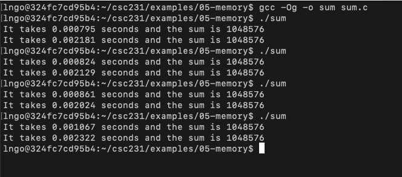

Memory hierarchy and cache memories
Contents
Memory hierarchy and cache memories#
Relevant Reading
This lecture will cover contents from Chapter 11 of the book.
1. Memory abstraction: writing and reading memory#
Overview
Write:
Transfer data from CPU to memory:
movq 8(%rsp), %raxStoreoperation
Read:
Trasnfer data from memory to CPU:
movq %rax, 8(%rbp)Loadoperation
Physical representation of this abstraction:

Random-Access Memory (RAM)
Key features:
RAM is traditionally packaged as a chip, or embedded as part of processor chip
Basic storage unit is normally a cell (one bit per cell).
Multiple RAM chips form a memory.
RAM comes in two varieties:
SRAM (Static RAM): transistors only
DRAM (Dynamic RAM): transistor and capacitor
Both are volatile: memory goes away without power.
SRAM |
DRAM |
|
|---|---|---|
Transitor per bit |
6 or 8 |
1 |
Access time |
1x |
10x |
Need refressh |
No |
Yes |
Need EDC |
Maybe |
Yes |
Cost |
100x |
1x |
Applications |
Cache memories |
Main memories, frame buffers |
EDC: Error Detection and Correction
Trends:
SRAM scales with semiconductor technology
Reaching its limits
DRAM scaling limited by need for minimum capacitance
Aspect ratio limits how deep can make capacitor
Also reaching its limits
Enhanced DRAMs
Operation of DRAM cell has not changed since its invention
Commercialized by Intel in 1970.
DRAM cores with better interface logic and faster I/O :
Synchronous DRAM (SDRAM)
Uses a conventional clock signal instead of asynchronous control
Double data-rate synchronous DRAM (DDR SDRAM)
Double edge clocking sends two bits per cycle per pin
Different types distinguished by size of small prefetch buffer:
DDR (2 bits), DDR2 (4 bits), DDR3 (8 bits), DDR4 (16 bits)
By 2010, standard for most server and desktop systems
Intel Core i7 supports DDR3 and DDR4 SDRAM
2. The CPU-Memory gap#
Locality
The key to bridging this gap is a fundamental property of computer programs known as locality:
Principle of Locality: Programs tend to use data and instructions with addresses near or equal to those they have used recently
Temporal locality: Recently referenced items are likely to be referenced again in the near futureSpatial locality: Items with nearby addresses tend to be referenced close together in time
sum = 0;
for (i = 0; i < n; i++)
sum += a[i];
return sum;
Data references
Reference array elements in succession (stride-1 reference pattern):
spatialReference variable
sumeach iteration:temporal
Instruction references
Reference instructions in sequence:
spatialCycle through loop repeatedly:
temporal
Qualitative estimates of locality
Being able to look at code and get a qualitative sense of its locality is among the key skills for a professional programmer.
Example: array layout in memory is row-major order

Does this function have good locality with respect to array a?
int sum_array_rows(int a[M][N]) {
int i, j, sum = 0;
for (i = 0; i < M; i++)
for (j = 0; j < N; j++)
sum += a[i][j];
return sum;
}
Answer
Yes
Does this function have good locality with respect to array a?
int sum_array_rows(int a[M][N]) {
int i, j, sum = 0;
for (j = 0; j < N; j++)
for (i = 0; i < M; i++)
sum += a[i][j];
return sum;
}
Answer
Yes
Hands-on: performance measurement of locality
In your home directory, create a directory called
05-memoryand change into this directory.Create a file named
sum.cwith the following contents:
Compile and run several times.
Observe the performance difference.
$ gcc -Og -o sum sum.c
$ ./sum
$ ./sum
$ ./sum
$ ./sum

3. Memory hierarchies#
Overview
Some fundamental and enduring properties of hardware and software:
Fast storage technologies cost more per byte, have less capacity, and require more power (heat!).
The gap between CPU and main memory speed is widening.
Well-written programs tend to exhibit good locality.
These fundamental properties complement each other beautifully.
They suggest an approach for organizing memory and storage systems known as a memory hierarchy.
4. Caching#
Overview
Cache: A smaller, faster storage device that acts as a staging area for a subset of the data in a larger, slower device.
Fundamental idea of a memory hierarchy:
For each
k, the faster, smaller device at levelkserves as a cache for the larger, slower device at levelk+1.
Why do memory hierarchies work?
Because of locality, programs tend to access the data at level
kmore often than they access the data at levelk+1.Thus, the storage at level k+1 can be slower, and thus larger and cheaper per bit.
Big Idea (Ideal): The memory hierarchy creates a large pool of storage that costs as much as the cheap storage near the bottom, but that serves data to programs at the rate of the fast storage near the top.
General concepts


Cold (compulsory) miss
Cold misses occur because the cache starts empty and this is the first reference to the block.
Capacity miss
Occurs when the set of active cache blocks (working set) is larger than the cache.
Conflict miss
Most caches limit blocks at level
k+1to a small subset (sometimes a singleton) of the block positions at levelk.E.g. Block i at level
k+1must be placed in block (i mod 4) at levelk.
Conflict misses occur when the level
kcache is large enough, but multiple data objects all map to the same levelkblock.E.g. Referencing blocks 0, 8, 0, 8, 0, 8, … would miss every time.
Cache Type |
What is cached |
Where is it cached |
Latency (cycles) |
Managed By |
|---|---|---|---|---|
Register |
4-6 byte words |
CPU core |
0 |
Compiler |
TLB |
Address translations |
On-chip TLB |
0 |
Hardware MMU |
L1 cache |
64-byte blocks |
On-chip L1 |
4 |
Hardware |
L2 cache |
64-byte blocks |
On-chip L2 |
10 |
Hardware |
Virtual memory |
4-KB pages |
Main memory |
100 |
Hardware + OS |
Buffer cache |
Part of files |
Main memory |
100 |
OS |
Disk cache |
Disk sectors |
Disk controller |
100,000 |
Disk firmware |
Network buffer cache |
Part of files |
Local disk |
10,000,000 |
NFS client |
Browser cache |
Web pages |
Local disk |
10,000,000 |
Web browser |
Web cache |
Web pages |
Remote server disks |
1,000,000,000 |
Web proxy server |
Cache memories
Small, fast SRAM-based memories managed automatically in hardware.
Hold frequently accessed blocks of main memory.
CPU looks first for data in cache.

Cache performance metrics
Miss Rate
Fraction of memory references not found in cache
(misses / accesses) = 1 – hit rateTypical numbers (in percentages):
3-10% for L1
can be quite small (e.g., < 1%) for L2, depending on size, etc.
Hit Time
Time to deliver a line in the cache to the processor
includes time to determine whether the line is in the cache
Typical numbers:
4 clock cycle for L1
10 clock cycles for L2
Miss Penalty
Additional time required because of a miss
typically 50-200 cycles for main memory (Trend: increasing!)
What those numbers mean?
Huge difference between a hit and a miss
Could be 100x, if just L1 and main memory
Would you believe 99% hits is twice as good as 97%?
Consider this simplified example:
cache hit time of 1 cycle
miss penalty of 100 cycles
Average access time:
97% hits: 1 cycle + 0.03 x 100 cycles = 4 cycles
99% hits: 1 cycle + 0.01 x 100 cycles = 2 cycles
This is why
miss rateis used instead ofhit rate.
5. Write cache friendly code#
Overview
Make the common case go fast
Focus on the inner loops of the core functions
Minimize the misses in the inner loops
Repeated references to variables are good (temporal locality)
Stride-1 reference patterns are good (spatial locality)
Key idea: our qualitative notion of locality is quantified through our understanding of cache memories.
Matrix multiplication example
Multiply N x N matrices
Matrix elements are doubles (8 bytes)
\(O(N^{3})\) total operations
N reads per source element
N values summed per destination but may be able to hold in register

Various matrix multiplication performance analysis
/* ijk */
for (i=0; i<n; i++) {
for (j=0; j<n; j++) {
sum = 0.0;
for (k=0; k<n; k++)
sum += a[i][k] * b[k][j];
c[i][j] = sum;
}
}
Miss rate for inner loop iterations:
Block size = 32 bytes (4 doubles)
A = 8 / 32 = 0.25
B = 1
C = 0
Average miss per iteration = 1.25

/* kij */
for (k=0; k<n; k++) {
for (i=0; i<n; i++) {
r = a[i][k];
for (j=0; j<n; j++)
c[i][j] += r * b[k][j];
}
}
Miss rate for inner loop iterations:
Block size = 32 bytes (4 doubles)
A = 0
B = 8 / 32 = 0.25
C = 8 / 32 = 0.25
Average miss per iteration = 0.5

/* jki */
for (j=0; j<n; j++) {
for (k=0; k<n; k++) {
r = b[k][j];
for (i=0; i<n; i++)
c[i][j] += a[i][k] * r;
}
}
Miss rate for inner loop iterations:
Block size = 32 bytes (4 doubles)
A = 1
B = 0
C = 1
Average miss per iteration = 2

The memory mountain
This is the cover of the book.
Y-axis: Read throughput (read bandwidth)
Number of bytes read from memory per second (MB/s)
Memory mountain: Measured read throughput as a function of spatial and temporal locality.
Compact way to characterize memory system performance.